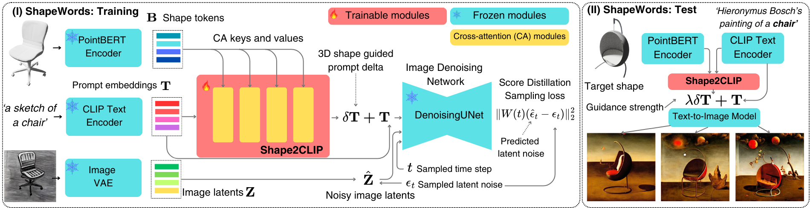

During training (I), ShapeWords takes as input triplet of a shape, a prompt, and an image. The shape S and prompt T are encoded using the shape encoder PointBert and the text encoder OpenCLIP, respectively. The resulting embeddings are passed through a cross-attention-based Shape2CLIP module, which produces a prompt residual δT to guide the source prompt toward the target geometry. This modified prompt is then passed as input to a Text-to-Image Denoising UNet along with sampled noisy image latents and time step t. The Shape2CLIP module is optimized via Score Distillation Sampling. During inference (II), the CLIP embeddings of the input prompt and the target embeddings of the test shape are passed through the Shape2CLIP module. Optionally, the desired strength of the shape guidance is controlled by the user parameter λ. For additional details about training data and implementation please refer to the paper.